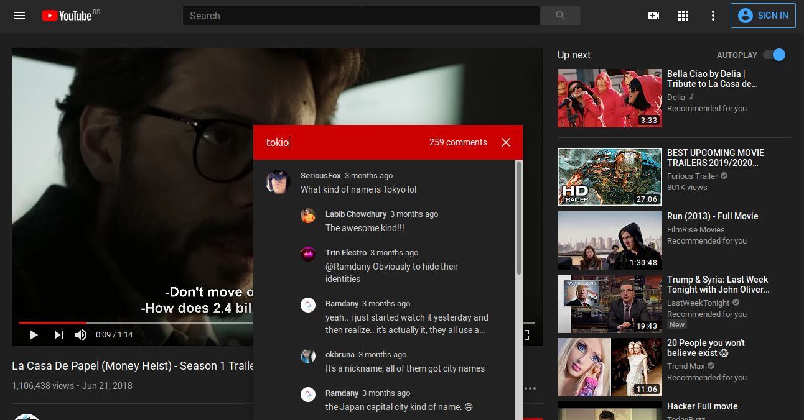
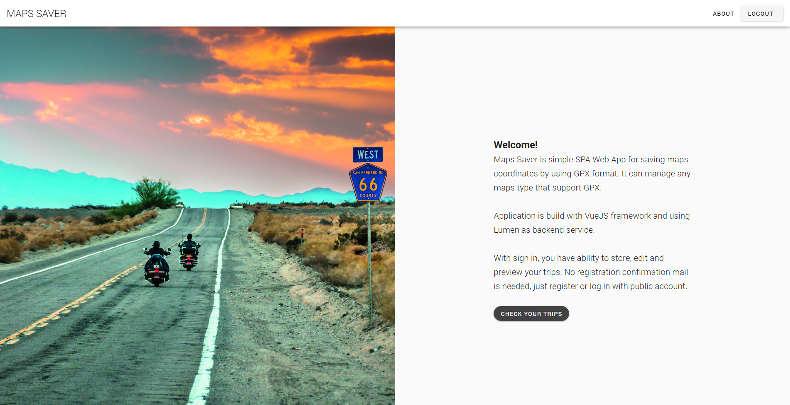
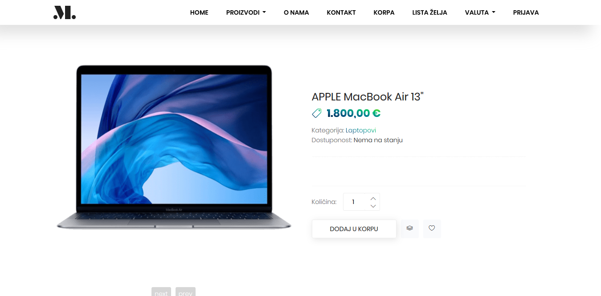
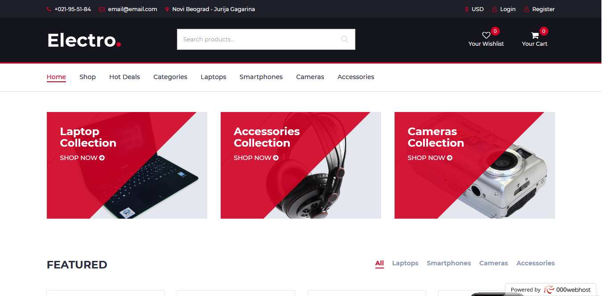

Tech skills and tools
Technologies: PHP, Javascript, HTML5, CSS3
Frameworks + Libraries: Laravel, Symfony, VueJs, Codeigniter, PHPUnit, jQuery, Bootstrap
CMS: Drupal
Tools: VCS, Docker, Jenkins, PhpStorm, VSCode
Databases: MySQL, MariaDB
Other: Linux, Windows Server, theoretical knowledge of TCP/IP stack
Side projects

Firefox extension for YouTube comments search
Simple extension which allows you to search all comments by specific keyword/s on currently watching video
using YouTube Data API.
Results per search request can’t exceed 100, including replies.
Showing the comments for a query depends on various factors and API.

Maps Saver App
Web App for storing trips as GPX files which describes waypoints,
routes and tracks that can be projected onto various map sources and annotating maps such is Google Maps.
Developed with VueJS (Vuex, Vuetify) with a Symfony framework as backend service.
App is hosted on Netlify cloud platform and backend service on
Digital Ocean.

E-shop
E-commerce platform for buying tech products with advanced shop filtering,
multi-currency support and online payment using Stripe service.
Front VueJs with a Laravel framework as backend.
College project intended only for demonstration purposes.

Electro-Shop
E-commerce platform for buying tech products with multi-currency,
multi-localization(English and Serbian) support.
Support online payment using Stripe services.
Front VueJs with Laravel framework as backend.
First project builded with Laravel and VueJS is intended only for skills demonstration.

Net-Cinema
Simple site intended for showing information about the latest and upcoming movies in cinemas.
Developed custom module that allows visitors to like or dislike specific movie but require
visitor email registration.
Created with Drupal CMS.